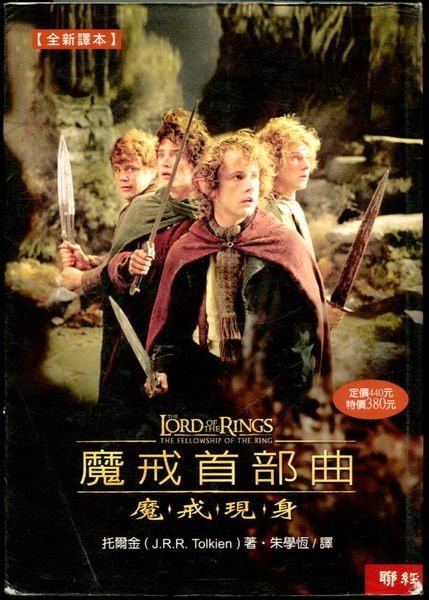

哈利波特：神秘的魔法石

《哈利波特：神秘的魔法石》是J.K.羅琳的奇幻文學作品，講述了一個年輕巫師的冒險故事。在11歲生日時，哈利發現自己是一個巫師，並被錄取到霍格華茲魔法學校就讀。
在學校裡，他結識了終身摯友榮恩和妙麗，一同揭開學校裡的神秘面紗，並與邪惡的佛地魔展開對抗。這是一個關於友情、勇氣和成長的精彩故事。
魔戒首部曲：魔戒現身
《魔戒》是托爾金創作的史詩奇幻小說，故事從霍比特人佛羅多繼承了一枚神秘戒指開始。這枚戒指是由邪惡的魔王索倫所打造，具有強大的魔力。
在甘道夫的指引下，佛